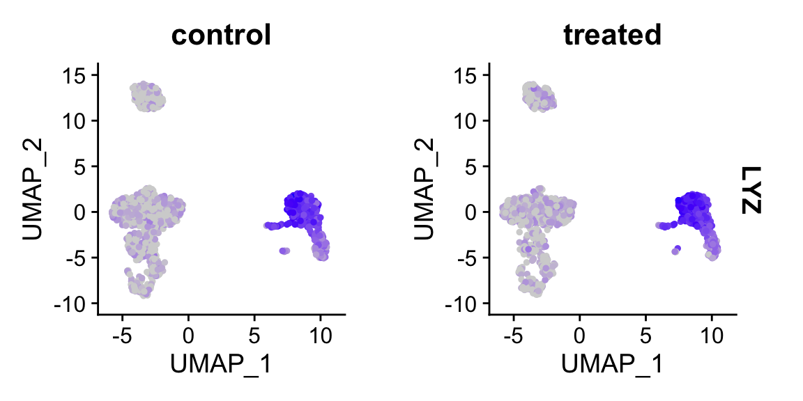
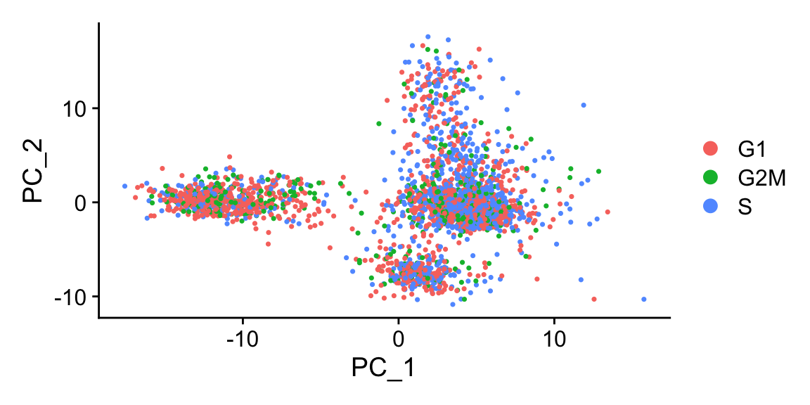
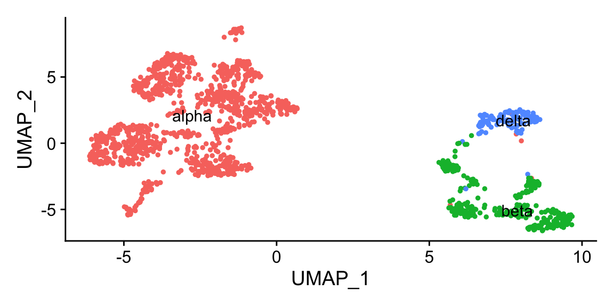

finding markers and differential expression analysis
After clustering, differential expression testing (DE analysis, similar to bulk RNA seq) finds gene signatures of each cluster/cell population, to give more insights into biology.
many proposed methods
(In general, we recommend default “wilcox” or “t”, good balances between speed and accuracy)

In Seurat, we can use the FindAllMarkers() function, which will perform the wilcox.test() by default . Specifically, the function will iterate through each cluster, comparing the cells in one cluster to the cells in all of the other clusters. The test is run for every gene that is detectable above certain thresholds. The output is then filtered to identify significant genes with a positive fold-change (i.e. higher in abundance the cluster).
We recommend using the wilcoxauc() function from the presto package (installed from github), which will do the same thing but in a (tiny) fraction of the time, due to implementation with C++ backend.
important considerations
Keep things simple first and look at the results (try not integrating, not regressing), look at the output, and determine what variables to regress out (batch, nCount_RNA, percent_mito, cell cycle, if needed) during scaling (note this only affects dimension reduction and clustering).
Note that the p-values from these tests will be absurdly low (near or at 0). This is in part due to the large number of samples tested (e.g. each cell is considered a sample) but also due to the data being clustered based on the gene expression. Testing for differential expression between clusters will always result in some differntially expressed genes… because that’s what makes them different clusters in the first place, hence the logical is somewhat circular and inflate p-values. Nevertheless we can use the p-values to rank the genes, but you shouldn’t just blindly trust that a p-value < 0.05 is something meaningful in single cell data.
A couple more words on preprocessing:
library(Seurat)
library(tidyverse)
# load data from saved RDS
sobj <- readRDS("/Users/rf/class/scRNAseq/cellar_v2/cellar/_vignettes/data/filtered_sobj.rds")
# log normalize
sobj_l <- NormalizeData(sobj) # <- skip this step if using scran normalization
sobj_l <- ScaleData(sobj_l,
vars.to.regress = c("nCount_RNA",
"percent_mito"))
# alternatively, sctransform is a one step normalization and scaling process
sobj_sc <- suppressWarnings(SCTransform(object = sobj, # sctransform has some unhelpful warnings
vars.to.regress = c("percent_mito"), # already corrects for transcript number
verbose = FALSE))
- Use normalized data for DE (slot is dependent on normalization method, also don’t use integrated assay)
# before normalization, "data" slot is the same as counts
sobj@assays$RNA@data[101:105,101:105] # raw counts
#> 5 x 5 sparse Matrix of class "dgCMatrix"
#> ATCTTGACCTCCCA-1 ATCTTTCTTGTCCC-1 ATGAAGGACCTGTC-1
#> PGD 2 . .
#> APITD1 . . .
#> DFFA . . .
#> PEX14 . . .
#> CASZ1 . . .
#> ATGACGTGATCGGT-1 ATGAGAGAAGTAGA-1
#> PGD . .
#> APITD1 . .
#> DFFA . .
#> PEX14 . .
#> CASZ1 . .
# after log normalization, results are stored in "data" slot
sobj_l@assays$RNA@data[101:105,101:105] # normalized
#> 5 x 5 sparse Matrix of class "dgCMatrix"
#> ATCTTGACCTCCCA-1 ATCTTTCTTGTCCC-1 ATGAAGGACCTGTC-1
#> PGD 2.727586 . .
#> APITD1 . . .
#> DFFA . . .
#> PEX14 . . .
#> CASZ1 . . .
#> ATGACGTGATCGGT-1 ATGAGAGAAGTAGA-1
#> PGD . .
#> APITD1 . .
#> DFFA . .
#> PEX14 . .
#> CASZ1 . .
# after sctransform, results are stored in new assay "SCT"
sobj_sc@assays$SCT@data[101:105,101:105] # normalized
#> 5 x 5 sparse Matrix of class "dgCMatrix"
#> ATCTTGACCTCCCA-1 ATCTTTCTTGTCCC-1 ATGAAGGACCTGTC-1
#> PGD 1.386294 . .
#> APITD1 . . .
#> DFFA . . .
#> PEX14 . . .
#> CASZ1 . . .
#> ATGACGTGATCGGT-1 ATGAGAGAAGTAGA-1
#> PGD . .
#> APITD1 . .
#> DFFA . .
#> PEX14 . .
#> CASZ1 . .sobj_sc@assays$RNA@data[101:105,101:105] # still same as counts, make sure not to use this!
#> 5 x 5 sparse Matrix of class "dgCMatrix"
#> ATCTTGACCTCCCA-1 ATCTTTCTTGTCCC-1 ATGAAGGACCTGTC-1
#> PGD 2 . .
#> APITD1 . . .
#> DFFA . . .
#> PEX14 . . .
#> CASZ1 . . .
#> ATGACGTGATCGGT-1 ATGAGAGAAGTAGA-1
#> PGD . .
#> APITD1 . .
#> DFFA . .
#> PEX14 . .
#> CASZ1 . .- Note that marker genes found is very dependent on clustering and the compared populations.
find all markers for each cluster
FindAllMarkers compares cells in each cluster to all other cells in the dataset. Typically, focus is given to genes upregulated in each cluster, ie markers.
# load clustered object
sobj_clusters <- readRDS("/Users/rf/class/scRNAseq/cellar_v2/cellar/_vignettes/data/clustered_sobj.rds")
# also check/set ident to the desired comparison
Idents(sobj_clusters) %>% head()
#> AAACATACAACCAC-1 AAACATTGAGCTAC-1 AAACGCTGACCAGT-1 AAACGCTGGTTCTT-1
#> 0 2 3 3
#> AAAGTTTGATCACG-1 AAATCATGACCACA-1
#> 2 5
#> Levels: 0 1 2 3 4 5 6 7Idents(sobj_clusters) <- sobj_clusters@meta.data$clusters
markers_df <- FindAllMarkers(sobj_clusters,
assay = "RNA", # be careful with sobj_sc and intergrated objects
slot = "data",
only.pos = TRUE)
markers_df %>% head()
#> p_val avg_logFC pct.1 pct.2 p_val_adj cluster gene
#> LDHB 7.282957e-247 1.1811710 0.926 0.483 9.156134e-243 0 LDHB
#> RPS12 3.142126e-222 0.8524704 1.000 0.988 3.950281e-218 0 RPS12
#> RPS25 1.258715e-211 0.8660816 1.000 0.966 1.582456e-207 0 RPS25
#> CD3D 6.379927e-201 1.0471003 0.873 0.261 8.020845e-197 0 CD3D
#> RPS27 1.100287e-196 0.7788876 0.999 0.990 1.383281e-192 0 RPS27
#> RPS3 2.473657e-192 0.7175880 1.000 0.991 3.109882e-188 0 RPS3pct.1: fraction detected in the cluster in question, pct.2: fraction detected in the rest of the cells avg_logFC: expression comparison of the cluster in question (> 0 means higher) vs rest of the cells
And the equivalent but faster way using presto::wilcoxauc
library(presto)
markers <- wilcoxauc(sobj_clusters, "clusters") # compute markers
markers %>% head()
#> feature group avgExpr logFC statistic auc
#> 1 AL627309.1 0 0.001629726 -0.0026757987 881460.0 0.4986152
#> 2 RP11-206L10.2 0 0.001184927 -0.0005575694 882400.0 0.4991470
#> 3 LINC00115 0 0.004489924 -0.0033339184 880359.5 0.4979927
#> 4 NOC2L 0 0.098153914 -0.0002869219 878388.0 0.4968775
#> 5 KLHL17 0 0.003237845 -0.0001995984 882809.0 0.4993783
#> 6 PLEKHN1 0 0.002453311 -0.0006959034 883943.0 0.5000198
#> pval padj pct_in pct_out
#> 1 0.2190641 0.4027602 0.17513135 0.4521964
#> 2 0.3101718 0.5006018 0.08756567 0.2583979
#> 3 0.2069766 0.3875648 0.43782837 0.8397933
#> 4 0.5860930 0.7458610 9.10683012 9.8191214
#> 5 0.5812118 0.7417390 0.26269702 0.3875969
#> 6 0.9843333 0.9886585 0.26269702 0.2583979find DE genes for specific cell groups
For more control in the comparisons, use FindMarkers. Positive average log (natural) fold change represents higher expression of the gene in cells of ident.1. pct1 and 2 are percent detected in each ident/population.
# DE analysis for 2 clusters
markers_df2 <- FindMarkers(sobj_clusters,
assay = "RNA",
slot = "data",
ident.1 = "1",
ident.2 = "2",
test.use = "t")
markers_df2 %>% head()
#> p_val avg_logFC pct.1 pct.2 p_val_adj
#> LYZ 0.000000e+00 4.586764 1.000 0.426 0.000000e+00
#> TYROBP 0.000000e+00 3.544515 0.994 0.111 0.000000e+00
#> CST3 0.000000e+00 3.459219 0.992 0.185 0.000000e+00
#> LGALS1 7.140047e-315 3.066783 0.980 0.131 8.976467e-311
#> S100A4 1.217470e-300 3.278204 1.000 0.358 1.530603e-296
#> S100A9 7.302898e-282 4.927262 0.996 0.136 9.181203e-278pct.1: fraction detected in the cells of ident.1, pct.2: fraction detected in the cells of ident.2 avg_logFC: expression comparison of ident.1 vs ident.2 (> 0 means higher in ident.1)
FindMarkers defaults to the current active ident. To use other value groups, set idents to the intended column, or use the group.by argument.
# compare control vs treated in only cluster 1
markers_df3 <- FindMarkers(sobj_clusters,
assay = "RNA",
slot = "data",
subset.ident = "1", # <- if needed, subset on current ident first, then switch idents
group.by = "orig.ident", # <- grouping cells by this metadata column
ident.1 = "control",
ident.2 = "treated")
Genes of interest can then be visualized as violin plots or feature plots.
# violin plots
Idents(sobj_clusters) <- sobj_clusters@meta.data$clusters # plots are grouped by active ident
VlnPlot(sobj_clusters, "LYZ")
# project on UMAP
FeaturePlot(sobj_clusters, "LYZ")
FeaturePlot(sobj_clusters, c("LYZ", "S100A4")) # can be a vector of gene names
FeaturePlot(sobj_clusters, "LYZ", split.by = "orig.ident") # <- split into panels based on metadata column

Sidebar: How to regress out cell cycle / ribosomal gene heterogeneity (and do you need to?)
# 1. assess phase and PCA
# Seurat stores a list of cell cycle specific genes for humans
s.genes <- Seurat::cc.genes$s.genes # obviously unsuitable for nonhuman
g2m.genes <- Seurat::cc.genes$g2m.genes
s.genes
#> [1] "MCM5" "PCNA" "TYMS" "FEN1" "MCM2" "MCM4"
#> [7] "RRM1" "UNG" "GINS2" "MCM6" "CDCA7" "DTL"
#> [13] "PRIM1" "UHRF1" "MLF1IP" "HELLS" "RFC2" "RPA2"
#> [19] "NASP" "RAD51AP1" "GMNN" "WDR76" "SLBP" "CCNE2"
#> [25] "UBR7" "POLD3" "MSH2" "ATAD2" "RAD51" "RRM2"
#> [31] "CDC45" "CDC6" "EXO1" "TIPIN" "DSCC1" "BLM"
#> [37] "CASP8AP2" "USP1" "CLSPN" "POLA1" "CHAF1B" "BRIP1"
#> [43] "E2F8"g2m.genes
#> [1] "HMGB2" "CDK1" "NUSAP1" "UBE2C" "BIRC5" "TPX2"
#> [7] "TOP2A" "NDC80" "CKS2" "NUF2" "CKS1B" "MKI67"
#> [13] "TMPO" "CENPF" "TACC3" "FAM64A" "SMC4" "CCNB2"
#> [19] "CKAP2L" "CKAP2" "AURKB" "BUB1" "KIF11" "ANP32E"
#> [25] "TUBB4B" "GTSE1" "KIF20B" "HJURP" "CDCA3" "HN1"
#> [31] "CDC20" "TTK" "CDC25C" "KIF2C" "RANGAP1" "NCAPD2"
#> [37] "DLGAP5" "CDCA2" "CDCA8" "ECT2" "KIF23" "HMMR"
#> [43] "AURKA" "PSRC1" "ANLN" "LBR" "CKAP5" "CENPE"
#> [49] "CTCF" "NEK2" "G2E3" "GAS2L3" "CBX5" "CENPA"
# score and phase call is added to metadata
sobj_l <- CellCycleScoring(sobj_l,
s.features = s.genes,
g2m.features = g2m.genes,
set.ident = FALSE)
sobj_l@meta.data %>% head()
#> orig.ident nCount_RNA nFeature_RNA percent_mito
#> AAACATACAACCAC-1 control 2419 779 3.017776
#> AAACATTGAGCTAC-1 control 4901 1350 3.795144
#> AAACGCTGACCAGT-1 control 2174 781 3.817847
#> AAACGCTGGTTCTT-1 control 2259 789 3.098716
#> AAAGTTTGATCACG-1 control 1265 441 3.478261
#> AAATCATGACCACA-1 control 4125 1365 4.581818
#> S.Score G2M.Score Phase
#> AAACATACAACCAC-1 0.10140023 -0.05909799 S
#> AAACATTGAGCTAC-1 -0.03669937 -0.05460303 G1
#> AAACGCTGACCAGT-1 -0.04334459 -0.04401501 G1
#> AAACGCTGGTTCTT-1 -0.02891103 0.01944167 G2M
#> AAAGTTTGATCACG-1 0.09548679 -0.07351012 S
#> AAATCATGACCACA-1 -0.06976057 -0.01901402 G1
# check PCA to see if cell cycle has strong effects
sobj_l <- FindVariableFeatures(sobj_l)
sobj_l <- RunPCA(sobj_l, verbose = FALSE, npcs = 10)
DimPlot(sobj_l, group.by = "Phase") # again, in this case, cell cycle does not have strong effects

# 2. look for cell cycle-specific genes as main drivers of PCA
topPCAgenes <- apply(
sobj_l@reductions$pca@feature.loadings, # contribution of each gene to each PC is stored here
MARGIN = 2,
FUN = function(x) names(sort(abs(x), decreasing = TRUE)[1:10]) # finds the most important genes in each PC
)
topPCAgenes
#> PC_1 PC_2 PC_3 PC_4 PC_5
#> [1,] "CST3" "NKG7" "HLA-DQA1" "PF4" "CKB"
#> [2,] "S100A9" "CST7" "CD79A" "SDPR" "FCGR3A"
#> [3,] "TYROBP" "GZMA" "CD79B" "PPBP" "MS4A7"
#> [4,] "FTL" "PRF1" "HLA-DPB1" "HIST1H2AC" "RP11-290F20.3"
#> [5,] "LST1" "GZMB" "CD74" "GNG11" "RHOC"
#> [6,] "FCN1" "FGFBP2" "HLA-DPA1" "SPARC" "SIGLEC10"
#> [7,] "AIF1" "GNLY" "MS4A1" "GP9" "LILRA3"
#> [8,] "LYZ" "CTSW" "HLA-DQB1" "NRGN" "LGALS2"
#> [9,] "FTH1" "CD79A" "HLA-DRB1" "RGS18" "HMOX1"
#> [10,] "S100A8" "CCL4" "PPBP" "PTCRA" "MS4A6A"
#> PC_6 PC_7 PC_8 PC_9 PC_10
#> [1,] "GZMK" "CCL5" "FCER1A" "IFIT1" "IFIT1"
#> [2,] "IL32" "GZMK" "CLEC10A" "ISG15" "ISG15"
#> [3,] "GZMB" "FCER1A" "ENHO" "MX1" "ANXA1"
#> [4,] "SPON2" "KLRG1" "SERPINF1" "GZMK" "PTTG1"
#> [5,] "VIM" "CLEC10A" "CD1C" "IFI6" "GBP1"
#> [6,] "S100A4" "SELL" "GZMK" "OASL" "LTB"
#> [7,] "AKR1C3" "LYAR" "RBP7" "TNFSF10" "MX1"
#> [8,] "B2M" "NKG7" "CLIC2" "ACTG1" "PCNA"
#> [9,] "S100A10" "AKR1C3" "RP6-91H8.3" "APOBEC3B" "HOPX"
#> [10,] "S100B" "IGFBP7" "S100A12" "LYAR" "CD27"
topPCAgenes %>%
as.vector() %>%
intersect(c(s.genes, g2m.genes)) # see how many S and G2M genes intersect with that list
#> [1] "PCNA"
# or just check top variable genes
cluster identities
Without venturing into the realm of philosphical debates on what a “cell type” constitutes, standard pratice is to use certain gene expression features to classify cells. This is often done manually, by visual inspection of key genes. Automated approaches that utilize a broader range of features are currently being developed.
manual inspection of key genes using expertise in the lab
# from the Seurat pancreas example
# we now have pan_celseq2, fully annotated in metadata column "celltype", and pan_smartseq2, ready to be annotated
data_url = "https://scrnaseq-workshop.s3-us-west-2.amazonaws.com"
pan_celseq2 <- readRDS(url(file.path(data_url, "pan_celseq2.rds")))
pan_celseq2@meta.data %>% head()
#> orig.ident nCount_RNA nFeature_RNA tech celltype
#> D28-1_1 SeuratProject 23438.618 5448 celseq2 alpha
#> D28-1_15 SeuratProject 27252.978 5918 celseq2 alpha
#> D28-1_17 SeuratProject 16177.715 4522 celseq2 alpha
#> D28-1_29 SeuratProject 39356.525 7416 celseq2 alpha
#> D28-1_30 SeuratProject 28958.986 6121 celseq2 alpha
#> D28-1_39 SeuratProject 7389.849 2746 celseq2 alpha
#> RNA_snn_res.0.8 seurat_clusters
#> D28-1_1 8 8
#> D28-1_15 8 8
#> D28-1_17 0 0
#> D28-1_29 8 8
#> D28-1_30 8 8
#> D28-1_39 0 0pan_smartseq2 <- readRDS(url(file.path(data_url, "pan_smartseq2.rds")))
pan_smartseq2@meta.data %>% head()
#> orig.ident nCount_RNA nFeature_RNA tech celltype
#> AZ_B9 SeuratProject 654549 4433 smartseq2 alpha
#> AZ_A6 SeuratProject 753413 4414 smartseq2 alpha
#> AZ_C1 SeuratProject 2044839 5069 smartseq2 alpha
#> AZ_A11 SeuratProject 705927 3900 smartseq2 alpha
#> AZ_C2 SeuratProject 1338503 5367 smartseq2 alpha
#> AZ_B11 SeuratProject 3378011 7137 smartseq2 alpha
#> RNA_snn_res.0.8 seurat_clusters
#> AZ_B9 11 11
#> AZ_A6 7 7
#> AZ_C1 11 11
#> AZ_A11 11 11
#> AZ_C2 11 11
#> AZ_B11 11 11
FeaturePlot(pan_smartseq2, c("IRX2","GC")) # marker genes for alpha
FeaturePlot(pan_smartseq2, c("IAPP","MAFA")) # marker genes for beta
FeaturePlot(pan_smartseq2, c("HHEX","LEPR")) # marker genes for delta
# optional, save the cluster numbers as "cluster.id"
pan_smartseq2 <- StashIdent(object = pan_smartseq2, save.name = "cluster.id") # or use AddMetaData
# Use RenameIdents to remap the idents from the current IDs to the new IDs
pan_smartseq2 <- RenameIdents(pan_smartseq2,
"0" = "alpha",
"1" = "alpha",
"2" = "alpha",
"3" = "alpha",
"7" = "alpha",
"9" = "alpha",
"11" = "alpha",
"5" = "beta",
"6" = "beta",
"8" = "beta",
"10" = "beta",
"4" = "delta")
# Plot UMAP with new cluster IDs
b <- DimPlot(object = pan_smartseq2,
label = TRUE) + NoLegend()
cowplot::plot_grid(a,b)
# remember to save the new idents into meta.data
pan_smartseq2 <- StashIdent(object = pan_smartseq2, save.name = "cluster_name")
pan_smartseq2@meta.data %>% head()
#> orig.ident nCount_RNA nFeature_RNA tech celltype
#> AZ_B9 SeuratProject 654549 4433 smartseq2 alpha
#> AZ_A6 SeuratProject 753413 4414 smartseq2 alpha
#> AZ_C1 SeuratProject 2044839 5069 smartseq2 alpha
#> AZ_A11 SeuratProject 705927 3900 smartseq2 alpha
#> AZ_C2 SeuratProject 1338503 5367 smartseq2 alpha
#> AZ_B11 SeuratProject 3378011 7137 smartseq2 alpha
#> RNA_snn_res.0.8 seurat_clusters cluster.id cluster_name
#> AZ_B9 11 11 11 alpha
#> AZ_A6 7 7 7 alpha
#> AZ_C1 11 11 11 alpha
#> AZ_A11 11 11 11 alpha
#> AZ_C2 11 11 11 alpha
#> AZ_B11 11 11 11 alphatowards a more automated approach of identity assignment
- using
Seurat, inference from previous seurat object (requires very similar seurat object), see Seurat Integration Vignette for more details.
# reset idents of pan_smartseq2
Idents(pan_smartseq2) <- "cluster.id"
pancreas <- FindTransferAnchors(reference = pan_celseq2, query = pan_smartseq2,
dims = 1:30)
predictions <- TransferData(anchorset = pancreas, refdata = pan_celseq2$celltype,
dims = 1:30)
pan_smartseq2 <- AddMetaData(pan_smartseq2, metadata = predictions)
Idents(pan_smartseq2) <- "predicted.id"
DimPlot(pan_smartseq2, label = TRUE) + NoLegend()

- using other classification packages such as
clustifyr.
clustifyr works by comparing the average gene expression in each cluster to a reference matrix that contains average gene signatures of reference cell types. The reference can be built from other single cell data, bulk-rna-seq, or other sources. Ranked Spearman correlation is used to compare the reference to the clusters. Only the variable genes are used for the correlation.
In order to compare our dataset we need to use a publically available reference dataset. In this example we use the other annotated experiment.Please see clustifyrdatahub for prebuilt general references available.
library(clustifyr)
# build a reference from expression matrix data
ref <- average_clusters(pan_celseq2@assays$RNA@data,
metadata = pan_celseq2@meta.data,
cluster_col = "celltype")
dim(ref)
#> [1] 34363 3res <- clustify(input = pan_smartseq2@assays$RNA@data,
ref_mat = ref,
metadata = pan_smartseq2@meta.data,
cluster_col = "cluster.id",
query_genes = pan_smartseq2@assays$RNA@var.features, # using Seurat computed variable genes
)
res # a matrix of correlation values between each cluster and reference cell types
#> alpha beta delta
#> 0 0.7382342 0.6399227 0.6088692
#> 1 0.7106232 0.5793125 0.5715972
#> 10 0.5854603 0.7216101 0.6418888
#> 11 0.6708439 0.6172400 0.5833315
#> 2 0.7496097 0.6165381 0.5963039
#> 3 0.7320384 0.6300580 0.6072802
#> 4 0.6102327 0.7002068 0.7932875
#> 5 0.6098376 0.7814286 0.6615390
#> 6 0.6251296 0.8029008 0.7063750
#> 7 0.7232752 0.6290922 0.6093593
#> 8 0.6437217 0.7805895 0.6762429
#> 9 0.7269138 0.5570430 0.5184847res2 <- cor_to_call(res,
metadata = pan_smartseq2@meta.data,
cluster_col = "cluster.id",
threshold = 0.5) # anything below 0.5 correlation are labeled as "unknown"
res2
#> # A tibble: 12 x 3
#> # Groups: cluster.id [12]
#> cluster.id type r
#> <chr> <chr> <dbl>
#> 1 0 alpha 0.738
#> 2 1 alpha 0.711
#> 3 11 alpha 0.671
#> 4 2 alpha 0.750
#> 5 3 alpha 0.732
#> 6 7 alpha 0.723
#> 7 9 alpha 0.727
#> 8 10 beta 0.722
#> 9 5 beta 0.781
#> 10 6 beta 0.803
#> 11 8 beta 0.781
#> 12 4 delta 0.793
# same as last section
new_meta <- call_to_metadata(res2,
metadata = pan_smartseq2@meta.data,
cluster_col = "cluster.id")
pan_smartseq2@meta.data <- new_meta
DimPlot(pan_smartseq2, label = T, group.by = "type") + NoLegend()

clustifyr also takes seurat objects as input directly, finds various needed data, and output another object with identities assigned.
ref2 <- seurat_ref(pan_celseq2,
cluster_col = "celltype")
identical(ref,ref2) # exactly the same as chunk above
#> [1] TRUE
res <- clustify(input = pan_smartseq2,
ref_mat = ref2,
cluster_col = "cluster.id",
seurat_out = TRUE)
res # returns a new seurat object
#> An object of class Seurat
#> 34363 features across 1443 samples within 1 assay
#> Active assay: RNA (34363 features, 2000 variable features)
#> 2 dimensional reductions calculated: pca, umapAlso see more tutorials at clustifyr.
cell type composition
Insight into different samples can be gained from the proportion of cells that fall into each cell type. Unfortunately, no dedicated tools are available for statistical testing.
tab1 <- sobj_clusters@meta.data %>% group_by(orig.ident, clusters) %>% tally() # counting up all combinations
tab1
#> # A tibble: 16 x 3
#> # Groups: orig.ident [2]
#> orig.ident clusters n
#> <fct> <fct> <int>
#> 1 control 0 553
#> 2 control 1 243
#> 3 control 2 176
#> 4 control 3 190
#> 5 control 4 74
#> 6 control 5 80
#> 7 control 6 14
#> 8 control 7 6
#> 9 treated 0 589
#> 10 treated 1 250
#> 11 treated 2 176
#> 12 treated 3 150
#> 13 treated 4 87
#> 14 treated 5 78
#> 15 treated 6 18
#> 16 treated 7 6tab2 <- tab1 %>% spread(key = clusters, value = n) # spread out into "wide" form
tab2
#> # A tibble: 2 x 9
#> # Groups: orig.ident [2]
#> orig.ident `0` `1` `2` `3` `4` `5` `6` `7`
#> <fct> <int> <int> <int> <int> <int> <int> <int> <int>
#> 1 control 553 243 176 190 74 80 14 6
#> 2 treated 589 250 176 150 87 78 18 6tab3 <- tab1 %>% group_by(orig.ident) %>%
mutate(n = n/sum(n)) %>% # convert counts to proportions first
spread(key = clusters, value = n)
tab3
#> # A tibble: 2 x 9
#> # Groups: orig.ident [2]
#> orig.ident `0` `1` `2` `3` `4` `5` `6` `7`
#> <fct> <dbl> <dbl> <dbl> <dbl> <dbl> <dbl> <dbl> <dbl>
#> 1 control 0.414 0.182 0.132 0.142 0.0554 0.0599 0.0105 0.00449
#> 2 treated 0.435 0.185 0.130 0.111 0.0643 0.0576 0.0133 0.00443and save tables to disk with write_csv
write_csv(tab3, "data/perc_clusters.csv")
tab4 <- read_csv("data/perc_clusters.csv")
other things to do with marker genes
gene list to pathway activity score, via
AUCellif TF expression is too low, consider
SCENICfor TF activity inferencestandard GO term enrichment tools
gProfiler2,enrichR,fgsea, etc etc